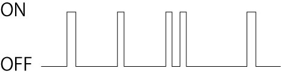

光のフォトンノイズ（ショットノイズ）
光のフォトンノイズに関する情報はいろいろなサイトに記載されています．例えば，ここ，ここ，いずれも，
\(\Large SNR = \frac{N}{\sqrt{N}}=\sqrt{N} \)
と記載されています（SNR= Signal to Noise Ratio).
これは，前提として，
光子がポツポツと降ってくる
たまに来る
ランダムに来る
というものを考えます（雨の降り始めをイメージしてもらえればいいのかもしれません）．
これをグラフで描くと，

こんな感じでしょうか？
さらに，反応式で記述すると，
\(\Large OFF \longleftrightarrow ON \)
となります．これってまるで，ランダム過程における自己相関関数について-01，と同じ形ですね．
たまにしか光子がやってこない（OFF＞ON）状態でありますが．
このようなランダムな過程が，
独立に
複数個
やってきた場合を考えましょう．ここで，
トータルの数 ： N
ON状態に存在する数 ： ｎ
ON状態に存在する確率 ： ｐ
OFF状態に存在する確率 ： ｑ＝１－ｐ
とします． ここで，\(\Large p+q=1 \)，です．
N個のうち，ON状態にｎ個存在する確率は，二項定理を使って，
\(\Large P_{N} (n) = \frac{N!}{(N-n)! \ n!} p^{n} \ q^{N-n} \)
となります．
次ページでは，平均値を求めていきましょう．